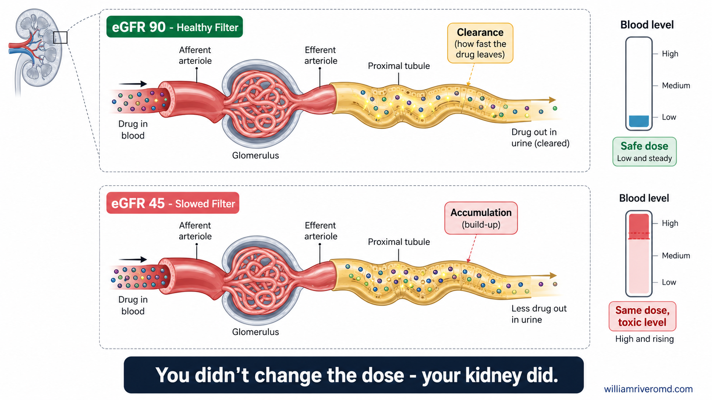
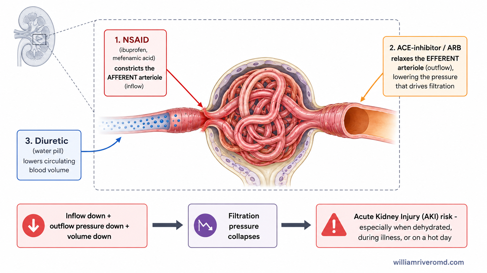
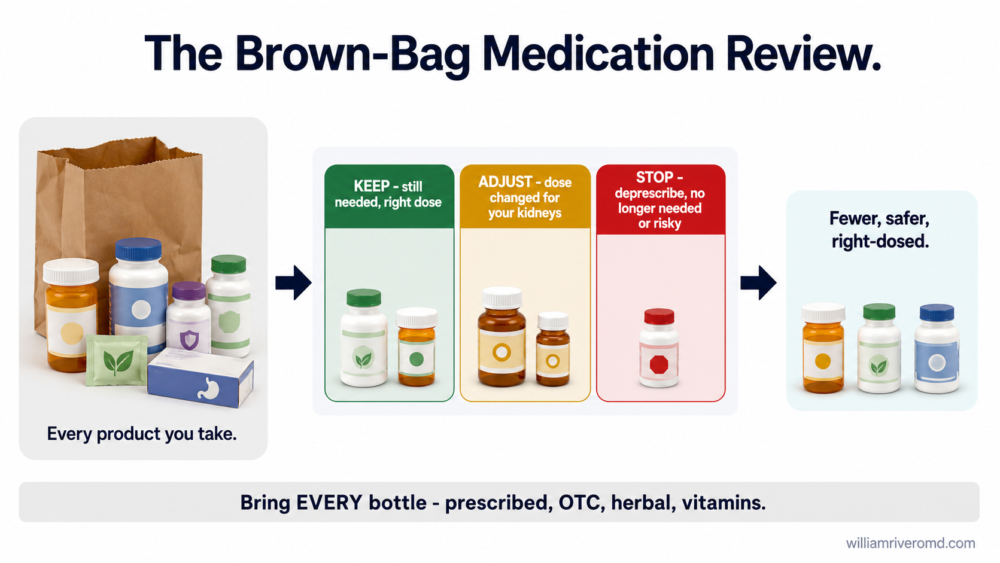

Why the Kidney Is the Body's Drug FilterBakit ang Bato ang Filter ng Katawan para sa GamotNganong ang Kidney mao ang Filter sa Lawas para sa Tambal Bakit ing Batu ing Filter ning Katawan para king Gamut
Most medicines, once they've done their job, leave the body through the kidneys — either the drug itself or the by-products your liver makes from it. Think of the kidney as a filter with a certain flow rate, measured as your eGFR (estimated filtration). At an eGFR of 90, the filter clears a drug briskly. At an eGFR of 45, it clears the same drug half as fast — so the drug lingers, the next dose lands on top of it, and the level in your blood climbs. You didn't change the dose. Your kidney did. That's why a medicine that was safe for years can slowly turn toxic as kidney function quietly declines — and why kidney doctors re-check doses whenever function changes.Karamihan sa mga gamot, kapag natapos na nila ang kanilang trabaho, ay umaalis sa katawan sa pamamagitan ng bato — maging ang gamot mismo o ang mga byproduct na ginagawa ng atay mula rito. Isipin ang bato bilang isang filter na may tiyak na bilis ng daloy, sinusukat bilang inyong eGFR (tinantyang filtration). Sa eGFR na 90, mabilis na nililinis ng filter ang isang gamot. Sa eGFR na 45, kalahati na lang ang bilis na nililinis nito ang parehong gamot — kaya nananatili ang gamot, dumadagdag ang susunod na dosis dito, at tumataas ang antas sa inyong dugo. Hindi ninyo binago ang dosis. Ang bato ninyo ang nagbago. Kaya't ang isang gamot na ligtas sa loob ng maraming taon ay maaaring dahan-dahang maging lason habang tahimik na bumababa ang function ng bato — at kaya't muling sinusuri ng mga doktor ng bato ang dosis tuwing nagbabago ang function.Kadaghanan sa mga tambal, kon nahuman na ang ilang trabaho, mogawas sa lawas pinaagi sa kidney — bisan ang tambal mismo o ang mga byproduct nga gihimo sa atay gikan niini. Isipa ang kidney isip usa ka filter nga adunay piho nga tulin sa agos, gisukod isip inyong eGFR (gibanabana nga filtration). Sa eGFR nga 90, paspas nga gihinloan sa filter ang usa ka tambal. Sa eGFR nga 45, katunga ra ang tulin niini paghinlo sa parehas nga tambal — busa nagpabilin ang tambal, midugang ang sunod nga dosis niini, ug misaka ang lebel sa inyong dugo. Wala ninyo giusab ang dosis. Ang inyong kidney ang nag-usab. Mao nga ang usa ka tambal nga luwas sulod sa daghang tuig mahimong hinay-hinay nga mahimong hilo samtang hilom nga nagkunhod ang function sa kidney — ug mao nga balik-balik nga gisusi sa mga doktor sa kidney ang dosis matag mausab ang function. Kadakalan da reng gamut, nung mapupus no ing trabaju da, ya lalako king katawan pota king batu — mamalsi king gamut mismo o ring byproduct a gagawan ning atian menibat kaniti. Isipan ye ing batu a metung a filter a atin tuktukan a bilis ning dalo, sinusukat bilang inyung eGFR (tinantyang filtration). King eGFR a 90, mabilis lang linisan ning filter ing metung a gamut. King eGFR a 45, kalati la ing bilis a linisan na ing gamut a addua — kaya mikaganaka ing gamut, dumaragul ing kasunud a dosis kaniti, at tumas ing antas king inyung daya. Ali yu binayu ing dosis. Ing batu yu ing mibayu. Kanita mengari ing metung a gamut a ligtas king kadakal a banua ya mengari dinan a lalson kabang tahimik yang bumaba ing function ning batu — at kanita paulit-ulit da reng doktor ning batu susugid ing dosis oring mibayu ing function.

Two lanes compare a healthy filter (eGFR 90) against a slowed filter (eGFR 45). The same dose goes in on both sides — but the slowed filter lets the drug build up in the blood to a toxic level, because it cannot clear it as fast.Inihahambing ng dalawang linya ang isang malusog na filter (eGFR 90) laban sa isang bagal na filter (eGFR 45). Parehong dosis ang pumapasok sa magkabilang panig — ngunit hinahayaan ng bagal na filter na mag-ipon ang gamot sa dugo hanggang sa maging mapanganib na antas, dahil hindi ito kayang linisin nang kasingbilis.Gitandi sa duha ka linya ang usa ka himsog nga filter (eGFR 90) batok sa usa ka hinay nga filter (eGFR 45). Parehas nga dosis ang misulod sa duha ka kilid — apan gitugotan sa hinay nga filter nga mag-ipon ang tambal sa dugo hangtod sa makadaot nga lebel, tungod kay dili kini makahimo paghinlo sa sama ka paspas.Ikakapara da reng aduang linya ing metung a malusog a filter (eGFR 90) laban king metung a maluat a filter (eGFR 45). Parehung dosis ing lulub king aduang bandi — ngarud pepasibayu ne ning maluat a filter ing gamut a mag-ipon king daya anggang king mapanganib a antas, uling ali yang kayang linisan king kasing bilis.
- eGFR
- Estimated glomerular filtration rate — the standard measure of kidney filter speed.Tinantyang glomerular filtration rate — ang karaniwang sukatan ng bilis ng filter ng bato.Gibanabana nga glomerular filtration rate — ang standard nga sukod sa tulin sa filter sa kidney.Tinantyang glomerular filtration rate — ing karaniwang sukat ning bilis ning filter ning batu.
The same dose becomes a higher effective doseAng parehong dosis ay nagiging mas mataas na epektibong dosisAng parehong dosis mahimong mas taas nga epektibong dosisIng dosis a addua ya mibayu a mas matas a epektibong dosis
"The same dose becomes a higher effective dose as your kidneys slow down." Any medicine you've taken safely for years is worth re-checking whenever your eGFR changes."Ang parehong dosis ay nagiging mas mataas na epektibong dosis habang bumabagal ang inyong bato." Anumang gamot na ligtas ninyong nainom sa loob ng maraming taon ay karapat-dapat na muling suriin sa tuwing nagbabago ang inyong eGFR."Ang parehong dosis mahimong mas taas nga epektibong dosis samtang naghinay ang inyong kidney." Bisan unsang tambal nga luwas ninyong giinom sulod sa daghang tuig angay ra usbon pagsusi matag mausab ang inyong eGFR."Ing dosis a addua ya mibayu a mas matas a epektibong dosis kabang bumabagal ing batu yu." Nanumang gamut a ligtas yung inaus king kadakal a banua ya dapat asuguran ubi mibayu ing eGFR yu.
Not All Drugs Depend on the Kidney the Same WayHindi Pareho ang Pag-asa ng Lahat ng Gamot sa BatoDili Parehas ang Pagsalig sa Tanang Tambal sa KidneyAli Pareu Ing Pangasalig Da Reng Sablang Gamut King Batu
Some medicines leave the body almost entirely through the kidneys — for these, eGFR is everything. Others are mostly broken down by the liver, so the kidney matters less (though it is rarely zero). A few, like most NSAIDs, don't need dose changes at all — they simply become dangerous because of how they affect blood flow inside the kidney, not because they build up. Knowing which category a medicine falls into is exactly why "I found it online" or "my neighbor takes the same dose" is not a safe way to decide.May mga gamot na halos ganap na umaalis sa katawan sa pamamagitan ng bato — para dito, ang eGFR ang lahat-lahat. Ang iba ay pangunahing sinisira ng atay, kaya hindi gaanong mahalaga ang bato (bagama't bihirang zero). Ang ilan, tulad ng karamihan ng NSAIDs, ay hindi kailangang baguhin ang dosis — nagiging mapanganib lamang ang mga ito dahil sa epekto nila sa daloy ng dugo sa loob ng bato, hindi dahil sa pag-ipon. Ang pagkaalam kung aling kategorya ang isang gamot ang dahilan kung bakit ang "nakita ko online" o "ang kapitbahay ko ay parehong dosis" ay hindi ligtas na paraan ng pagdedesisyon.Adunay mga tambal nga halos hingpit nga mogawas sa lawas pinaagi sa kidney — alang niini, ang eGFR mao ang tanan-tanan. Ang uban kasagaran gibungkag sa atay, mao nga dili kaayo importante ang kidney (bisan tuod talagsa ra kini zero). Ang pipila, sama sa kadaghanan sa NSAIDs, wala magkinahanglan og pag-usab sa dosis — mahimo lamang kini peligroso tungod sa epekto niini sa agos sa dugo sulod sa kidney, dili tungod sa pag-ipon. Ang pagkahibalo kon unsang kategorya ang usa ka tambal mao ang hinungdan ngano nga ang "nakita nako online" o "parehas ang dosis sa akong silingan" dili luwas nga paagi sa pagdesisyon.Atin lang deng gamut a bina ganap a lalako king katawan pota king batu — para kareti, ing eGFR ing sabla-sabla. Deng aliwa ya masalese sinisira ning atian, kanita ali masiadu mayaus ing batu (agyang bihirang zero). Deng pilan, anti reng kadakalan a NSAIDs, ala nang kailangan a bayuan ing dosis — mibaluan la mung mapanganib uling king epektu ra king dalo ning daya king kilub na ning batu, ali uling king pamag-ipon. Ing pamikaalu nung nanung kategorya ing metung a gamut ing dahilan bakit ing "makit ke king online" o "ing kapit-bahay ku ya parehung dosis" ya ali ligtas a paralan ning pamagdesisyon.
| eGFR RangeSaklaw ng eGFRSakup sa eGFRSaklaw ning eGFR | KDIGO StageYugto ng KDIGOYugto sa KDIGOYugtu ning KDIGO | What Usually Happens to DosesKaraniwang Nangyayari sa DosisKasagarang Mahitabo sa DosisKaraniwan Manyayari King Dosis |
|---|---|---|
| ≥ 60 | G1–G2 | Most standard doses apply; the triple whammy is still possible if stacked.Karamihan sa karaniwang dosis ay angkop; posible pa rin ang triple whammy kung nagtambak.Kadaghanan sa standard nga dosis mo-apply; posible gihapon ang triple whammy kon gitambak.Kadakalan king karaniwan a dosis ya mitupad; posible pa murin ing triple whammy nung mitambak. |
| 30–59 | G3a–G3b | Many drug doses need lowering here — this is the range where re-checking matters most.Maraming dosis ng gamot ang kailangang babaan dito — ito ang saklaw kung saan pinaka-mahalaga ang muling pagsusuri.Daghang dosis sa tambal ang kinahanglan paubson dinhi — kini ang sakup diin importante gyud ang pagsusi pag-usab.Dakal a dosis da reng gamut ing kailangan babaan keni — ini ing saklaw nung nu pinaka-mayaus ing pamagsuguran pasibayu. |
| 15–29 | G4 | Several common medicines (some diabetes drugs, some pain and nerve medicines) are stopped or switched entirely.Ilang karaniwang gamot (ilang gamot sa diyabetis, ilang gamot sa sakit at nerbiyos) ay ihinto o ganap na papalitan.Pipila ka komon nga tambal (pipila ka tambal sa diabetes, pipila ka tambal sa sakit ug nerbiyos) undangon o hingpit nga ilisan.Pilan a karaniwan a gamut (pilan a gamut king diabetes, pilan a gamut king sakit at nerbiyos) isabi o ganap a pamalitan. |
| < 15 | G5 | Kidney failure range — many medicine lists are rebuilt from scratch with the nephrology team.Saklaw ng pagkabigo ng bato — maraming listahan ng gamot ang muling binubuo kasama ang nephrology team.Sakup sa kapakyasan sa kidney — daghang listahan sa tambal ang gitukod pag-usab uban sa nephrology team.Saklaw ning pamialan ning batu — dakal a listahan ning gamut ing pasibayung buluan kayabe ning nephrology team. |
These bands are a general guide, not a substitute for your own lab results. Your nephrologist decides which specific medicines on your list need adjustment at each stage.Ang mga hanay na ito ay pangkalahatang gabay, hindi kapalit ng sarili ninyong resulta ng laboratoryo. Napagpapasyahan ng inyong nephrologist kung aling mga partikular na gamot sa inyong listahan ang kailangang isaayos sa bawat yugto.Kini nga mga banda usa ka kinatibuk-ang giya, dili puli sa inyong kaugalingong resulta sa laboratoryo. Ang inyong nephrologist ang magdesisyon kon unsang piho nga tambal sa inyong listahan ang kinahanglan ayohon sa matag yugto.Deng banda ini karaniwan a guide, ali kapalit ning sarili yung resulta ning laboratoryo. Ing nephrologist yu ing magdesisyon nung nanung partikular a gamut king listahan yu ing kailangan ayusan king balang yugto.
The Triple WhammyAng Tatlong Sabay na SuntokAng Tulo ka Sabay nga Suntok Ing Atlung Sabay a Sagpang
The most important combination to know by name. Three common, individually "safe" medicines, taken together, can shut down kidney filtration:Ang pinaka-mahalagang kombinasyon na dapat malaman sa pangalan. Tatlong karaniwan, indibidwal na "ligtas" na gamot, kapag inumin nang sabay-sabay, ay maaaring magsara ng filtration ng bato:Ang pinaka-importante nga kombinasyon nga angay mahibaloan sa ngalan. Tulo ka komon, indibidwal nga "luwas" nga tambal, kon inumon nga sabay-sabay, mahimong makapasara sa filtration sa kidney:Ing pinaka-mayaus a kombinasyon a dapat abalu king lagyu. Atlung karaniwan, indibidwal a "ligtas" a gamut, nung inaus a mitagkil, malyari yang magsara king filtration ning batu:
NSAID Pain RelieverPampakalma ng Sakit na NSAIDPainkiller nga NSAIDPampasibayu ning Dolor a NSAID
Mefenamic acid, ibuprofen, celecoxib — constricts the inflow to the filter (the afferent arteriole).Mefenamic acid, ibuprofen, celecoxib — pinipigilan ang daloy papasok sa filter (ang afferent arteriole).Mefenamic acid, ibuprofen, celecoxib — gipug-ngan ang agos padulong sa filter (ang afferent arteriole).Mefenamic acid, ibuprofen, celecoxib — kikilanan ne ing dalo a lulub king filter (ing afferent arteriole).
ACE-Inhibitor or ARBACE-Inhibitor o ARBACE-Inhibitor o ARBACE-Inhibitor o ARB
For blood pressure or the heart — relaxes the outflow (the efferent arteriole), dropping the pressure that drives filtration.Para sa presyon ng dugo o puso — nagpapaluwag sa daloy palabas (ang efferent arteriole), na nagpapababa sa presyon na nagpapatakbo ng filtration.Para sa presyon sa dugo o kasingkasing — gipahuway ang agos pagawas (ang efferent arteriole), nagpaubos sa presyon nga nagpalihok sa filtration.Para king presyon ning daya o pusu — papaluagan ne ing dalo a lulwal (ing efferent arteriole), a mibaba ing presyon a mamagpatakbu king filtration.
Diuretic ("Water Pill")Diuretic ("Tableta sa Tubig")Diuretic ("Tambal sa Tubig")Diuretic ("Tableta king Danum")
Lowers your circulating volume, so there's less blood to filter.Pinababa ang inyong circulating volume, kaya mas kaunti ang dugong dapat i-filter.Nagpaubos sa inyong circulating volume, mao nga mas gamay ang dugo nga i-filter.Papababaan ne ing circulating volume yu, kanita mas basta ing daya a filter-an.
Inflow down, outflow pressure down, volume down — filtration can collapse into acute kidney injury. Each drug alone is usually fine. The stack is the danger, especially on a hot day, during a stomach bug, or when you're dehydrated.Bumaba ang daloy papasok, bumaba ang presyon palabas, bumaba ang volume — maaaring bumagsak ang filtration sa acute kidney injury. Karaniwang ligtas ang bawat gamot mag-isa. Ang pagtambak ang panganib, lalo na sa mainit na araw, habang may sakit sa tiyan, o kapag na-dehydrate kayo.Mikunhod ang agos padulong, mikunhod ang presyon pagawas, mikunhod ang volume — mahimong mahagsa ang filtration ngadto sa acute kidney injury. Kasagaran luwas ang matag tambal nga nag-inusara. Ang pagtambak ang peligro, ilabina sa init nga adlaw, samtang adunay sakit sa tiyan, o kon na-dehydrate kamo.Bumaba ing dalo a lulub, bumaba ing presyon a lulwal, bumaba ing volume — malyari yang mibagsak ing filtration king acute kidney injury. Karaniwan ligtas ing balang gamut a sarili. Ing pagtambak ing peligru, lalu na king mapali a aldo, kabang atin sakit king atian, o nung na-dehydrate ko.

The glomerulus (filtering unit) needs pressure on both sides of its blood vessels to filter properly. An NSAID narrows the vessel bringing blood in, an ACE-inhibitor/ARB widens the vessel letting blood out, and a diuretic reduces the blood volume overall — together, filtration pressure collapses.Kailangan ng glomerulus (yunit ng pag-filter) ng presyon sa magkabilang panig ng mga daluyan ng dugo nito upang tama ang pag-filter. Pinapaliit ng NSAID ang daluyan na nagdadala ng dugo papasok, pinapalapad ng ACE-inhibitor/ARB ang daluyan na nagpapalabas ng dugo, at binabawasan ng diuretic ang kabuuang volume ng dugo — sabay-sabay, bumabagsak ang presyon ng filtration.Nagkinahanglan ang glomerulus (unit sa pag-filter) og presyon sa duha ka kilid sa iyang mga sudlanan sa dugo aron husto ang pag-filter. Gipahigot sa NSAID ang sudlanan nga nagdala og dugo padulong, gipalapad sa ACE-inhibitor/ARB ang sudlanan nga nagpagawas sa dugo, ug ginakunhoran sa diuretic ang tibuok volume sa dugo — sabay-sabay, mahagsa ang presyon sa filtration.Kailangan ne ning glomerulus (yunit ning pag-filter) ing presyon king aduang bandi da reng daluyan ning daya na king manintun ya para king tamang pag-filter. Papaliitan ne ning NSAID ing daluyan a magdala king daya a lulub, papalapdan ne ning ACE-inhibitor/ARB ing daluyan a mamagpalwal king daya, at babawasan ne ning diuretic ing kabuuan a volume ning daya — mitagkil, mibagsak ing presyon ning filtration.
- NSAID
- Non-steroidal anti-inflammatory drug — a class of pain relievers including ibuprofen and mefenamic acid.Non-steroidal anti-inflammatory drug — isang klase ng pampakalma ng sakit kasama ang ibuprofen at mefenamic acid.Non-steroidal anti-inflammatory drug — usa ka klase sa painkiller lakip ang ibuprofen ug mefenamic acid.Non-steroidal anti-inflammatory drug — metung a klase ning pampasibayu ning dolor kayabe ing ibuprofen at mefenamic acid.
- ACEi/ARB
- ACE-inhibitor / angiotensin receptor blocker — blood pressure medicines that also protect the kidney long-term.ACE-inhibitor / angiotensin receptor blocker — mga gamot sa presyon ng dugo na nagpoprotekta rin sa bato sa mahabang panahon.ACE-inhibitor / angiotensin receptor blocker — mga tambal sa presyon sa dugo nga nagpanalipod usab sa kidney sa dugay nga panahon.ACE-inhibitor / angiotensin receptor blocker — deng gamut king presyon ning daya a mamagprotekta murin king batu king maluat a panaun.
Ask before you add a pain relieverMagtanong Bago Magdagdag ng Pampakalma ng SakitPangutana Una Magdugang og PainkillerIsulit Ka Bayu Manaya king Pampasibayu ning Dolor
If you take a blood-pressure pill and a water pill, treat over-the-counter pain relievers as a kidney decision — ask first.Kung umiinom kayo ng gamot sa presyon ng dugo at gamot sa tubig, ituring ang mga OTC na pampakalma ng sakit bilang isang desisyon tungkol sa bato — magtanong muna.Kon nag-inom kamo og tambal sa presyon sa dugo ug tambal sa tubig, isipa ang OTC nga painkiller isip usa ka desisyon bahin sa kidney — pangutana una.Nung mangamit kong gamut king presyon ning daya at gamut king danum, ilarawan yu ing OTC a pampasibayu ning dolor a metung a desisyon tungkul king batu — isulit ka anaman.
When the Triple Whammy Is Most DangerousKailan Pinaka-Mapanganib ang Triple WhammyKanus-a Pinaka-Peligroso ang Triple WhammyNung Nakanyan Pinaka-Mapanganib Ing Triple Whammy
The combination is riskiest exactly when your body is already under stress: a hot day with heavy sweating, a stomach bug with vomiting or diarrhea, a fever, or simply not drinking enough water. In all of these, your circulating blood volume is already low before any medicine is added — the diuretic and NSAID push it lower still, and filtration pressure can collapse within a day or two.Ang kombinasyon ay pinaka-mapanganib eksakto kapag ang inyong katawan ay nasa stress na: isang mainit na araw na may matinding pagpawis, sakit sa tiyan na may pagsusuka o pagtatae, lagnat, o simpleng hindi sapat na pag-inom ng tubig. Sa lahat ng ito, mababa na ang inyong circulating blood volume bago pa man magdagdag ng anumang gamot — pinapababa pa ito ng diuretic at NSAID, at maaaring bumagsak ang presyon ng filtration sa loob ng isa o dalawang araw.Ang kombinasyon labing peligroso gyud kon ang inyong lawas naa na sa stress: usa ka init nga adlaw nga daghan og singot, sakit sa tiyan nga adunay pagsuka o pagtae, hilanat, o dili lang paghinum og igo nga tubig. Sa tanan niini, ubos na ang inyong circulating blood volume sa dili pa gidugang ang bisan unsang tambal — gipaubos pa gyud kini sa diuretic ug NSAID, ug mahimong mahagsa ang presyon sa filtration sulod sa usa o duha ka adlaw.Ing kombinasyon ya pinaka-mapanganib gaganapa nung ing katawan yu atin ne king stress: metung a mapali a aldo a atin dakal a pawis, sakit king atian a atin pagsuka o pamagta, lagnat, o ali basta pamainum king danum. King sabla kareti, mababa ne ing circulating blood volume yu bayu pa man magdagdag ning nanumang gamut — babaan pa ini ning diuretic at NSAID, at malyaring mibagsak ing presyon ning filtration king kilub na ning metung o aduang aldo.
Sick-day rules: what to pause while you're unwellMga Alituntunin sa Araw ng Karamdaman: Ano ang Ihihinto Habang May SakitMga Lagda sa Adlaw sa Sakit: Unsa ang Undangon Samtang Wala MaayoDeng Tuntunan King Aldo Ning Karamdaman: Nanu Ing Ipipaknat Kabang Ali Mayap
- During vomiting, diarrhea, fever, or any illness where you're drinking much less than usual, ask your doctor whether to temporarily pause your diuretic, ACE-inhibitor/ARB, and any NSAID until you're eating and drinking normally again.Sa panahon ng pagsusuka, pagtatae, lagnat, o anumang sakit kung saan mas kaunti ang inyong iniinom kaysa karaniwan, tanungin ang inyong doktor kung dapat pansamantalang ihinto ang inyong diuretic, ACE-inhibitor/ARB, at anumang NSAID hanggang sa normal na kayo ulit kumakain at umiinom.Sa panahon sa pagsuka, pagtae, hilanat, o bisan unsang sakit diin mas gamay ang inyong giinom kaysa naandan, pangutan-a ang inyong doktor kon angay ba temporaryo nga undangon ang inyong diuretic, ACE-inhibitor/ARB, ug bisan unsang NSAID hangtod normal na kamo pagkaon ug pag-inom pag-usab.King panaun ning pagsuka, pamagta, lagnat, o nanumang sakit nung nu mas basta ing inaus yung danum kesa king karaniwan, isulit ye ing doktor yu nung dapat pansamantalang ipaknat ing diuretic, ACE-inhibitor/ARB, at nanumang NSAID yu anggang normal na kong mangan at mangainum pasibayu.
- Do not stop a blood-pressure or heart medicine on your own without asking — some must never be stopped abruptly. The point is to have a plan with your doctor before you get sick, not to decide alone in the moment.Huwag ihinto ang gamot sa presyon ng dugo o puso nang mag-isa nang walang pagtatanong — ang ilan ay hindi dapat biglang ihinto. Ang punto ay magkaroon ng plano kasama ang inyong doktor bago kayo magkasakit, hindi magdesisyon nang mag-isa sa oras mismo.Ayaw undanga ang tambal sa presyon sa dugo o kasingkasing nga inusara nga walay pagpangutana — ang uban dili gayud angay hinay-hinayon nga undangon. Ang punto mao ang paghimo og plano uban sa inyong doktor sa dili pa kamo masakit, dili magdesisyon nga inusara sa gutlo mismo.Ala nakang ipaknat ing gamut king presyon ning daya o pusu a sarili a alang pamagtanong — deng metung ali dapat pakalting ipaknat. Ing punto ya ing atin planu kayabe ning doktor yu bayu kong misaklit, ali magdesisyon a sarili king oras mismo.
- Prioritize fluids and, if you can keep food down, salty broth or oral rehydration solution — ask your care team what's appropriate for your fluid limits if you're on dialysis.Unahin ang mga likido at, kung kaya ninyong panatilihin ang pagkain, maalat na sabaw o oral rehydration solution — tanungin ang inyong care team kung ano ang angkop para sa inyong limitasyon sa likido kung kayo ay nasa dialysis.Unahon ang mga likido ug, kon makapadayon kamo og pagkaon, parat nga sabaw o oral rehydration solution — pangutan-a ang inyong care team kon unsa ang angay alang sa inyong limitasyon sa likido kon naa kamo sa dialysis.Unahan yu deng likido at, nung kaya yung ipanatili ing pamangan, maalat a sabaw o oral rehydration solution — isulit ye ing care team yu nung nanu ing tumpak para king limitasyon yung likido nung kayu atsu king dialysis.
- Restart your usual medicines only once you're back to eating and drinking normally, or as your doctor advises — restarting too early, while still dehydrated, brings the same risk back.Ibalik ang inyong karaniwang gamot lamang kapag kayo ay bumalik na sa normal na pagkain at pag-inom, o ayon sa payo ng inyong doktor — ang masyadong maagang pagbalik, habang na-dehydrate pa rin, ay nagdadala pabalik ng parehong panganib.Ibalik ang inyong naandan nga tambal lamang kon kamo balik na sa normal nga pagkaon ug pag-inom, o sumala sa tambag sa inyong doktor — ang sobra ka sayo nga pagbalik, samtang na-dehydrate pa gihapon, magdala balik sa parehas nga peligro.Ibalik yu deng karaniwan yung gamut mu kong mibalik na kong normal a mangan at mangainum, o agpang king pamituran ning doktor yu — ing masiadung maagang pamibalik, kabang na-dehydrate ka pa, ya magdala pabalik king parehung peligru.
The Usual CulpritsAng Mga Karaniwang May KasalananAng mga Kasagarang Sad-an Deng Karaniwan a Makasalanan
Plain-language, Philippine-aware — the products most likely to hurt your kidneys if used carelessly.Sa simpleng salita, alam ang konteksto ng Pilipinas — ang mga produktong pinaka-malamang makasakit ng inyong bato kung ginamit nang walang ingat.Sa yano nga pinulongan, nahibalo sa konteksto sa Pilipinas — ang mga produkto nga labing lagmit makadaot sa inyong kidney kon gigamit nga walay pag-amping.King simpling amanu, abalu ing konteksto ning Pilipinas — deng produktu a pinaka-malyaring masaktan ing batu yu nung gagamitan a alang pag-ingat.
| ProductProduktoProduktoProduktu | Why It's RiskyBakit Ito MapanganibNgano nga PeligrosoBakit Mapanganib Ini |
|---|---|
| NSAIDs / mefenamic acidNSAIDs / mefenamic acidNSAIDs / mefenamic acidNSAIDs / mefenamic acid | The most common OTC kidney offender in the Philippines. Cuts blood flow to the filter; risk rises with dose, duration, dehydration, and the triple-whammy stack.Ang pinaka-karaniwang OTC na dahilan ng pinsala sa bato sa Pilipinas. Binabawasan ang daloy ng dugo papunta sa filter; tumataas ang panganib kasabay ng dosis, tagal, dehydration, at ang pagtambak ng triple-whammy.Ang pinaka-komon nga OTC nga hinungdan sa kadaot sa kidney sa Pilipinas. Ginakunhoran ang agos sa dugo padulong sa filter; misaka ang peligro uban sa dosis, gidugayon, dehydration, ug ang pagtambak sa triple-whammy.Ing pinaka-karaniwan a OTC a dahilan ning danya king batu king Pilipinas. Babawasan ne ing dalo ning daya king filter; tumas ing peligru kayabe ning dosis, katagalan, dehydration, at ing pagtambak ning triple-whammy. |
| Chronic acid reducers (PPIs)Malaong Pambawas ng Acid (PPIs)Dugay nga Pagpakunhod og Acid (PPIs)Maluat a Pamabawas ning Acid (PPIs) | Omeprazole, pantoprazole and the like. Long-term use can inflame the kidney's filtering tissue (acute interstitial nephritis) and is linked to gradual CKD. Reassess whether you still need it.Omeprazole, pantoprazole at katulad nito. Ang matagalang paggamit ay maaaring magpaalab sa tisyu ng pag-filter ng bato (acute interstitial nephritis) at nauugnay sa unti-unting CKD. Muling suriin kung kailangan pa ninyo ito.Omeprazole, pantoprazole ug susama niini. Ang dugay nga paggamit mahimong makapasiga sa tisyu sa pag-filter sa kidney (acute interstitial nephritis) ug nalambigit sa hinay-hinay nga CKD. Susiha pag-usab kon kinahanglan pa ninyo kini.Omeprazole, pantoprazole at makapareho kaniti. Ing maluat a pamake ya malyari yang magpaalab king tisyu ning pag-filter ning batu (acute interstitial nephritis) at makasugpun king kalati-lating CKD. Asuguran pasibayu nung kailangan yu ya pa. |
| Herbal, slimming, whitening, and traditional productsHerbal, Pampapayat, Pampaputi, at Tradisyonal na ProduktoHerbal, Pampanipis, Pamputi, ug Tradisyonal nga ProduktoHerbal, Pampayat, Pampaputi, at Tradisyonal a Produktu | Often unregulated, sometimes adulterated with hidden drugs or heavy metals, and almost never mentioned to the doctor. "Natural" is not the same as "kidney-safe."Madalas na hindi kinokontrol, minsan ay may halong nakatagong gamot o mabibigat na metal, at halos hindi kailanman binabanggit sa doktor. Ang "natural" ay hindi katumbas ng "ligtas sa bato."Kasagaran wala girehistro, usahay adunay sagol nga tinago nga tambal o bug-at nga metal, ug halos wala gayud gisulti sa doktor. Ang "natural" dili parehas sa "luwas sa kidney."Masalese ali kinokontrol, aliwa maisalungat ning makasulut a gamut o mabibigat a metal, at bina ali menabi king doktor. Ing "natural" ali makapadeg king "ligtas king batu." |
| Contrast dye (CT scans, angiograms)Contrast Dye (CT Scan, Angiogram)Contrast Dye (CT Scan, Angiogram)Contrast Dye (CT Scan, Angiogram) | Can stress vulnerable kidneys; prevention is hydration and timing, and telling the radiology team your kidney function first.Maaaring mag-stress sa mahinang bato; ang pag-iwas ay hydration at tamang oras, at sabihin muna sa radiology team ang inyong function ng bato.Mahimong makapastress sa huyang nga kidney; ang pagpugong mao ang hydration ug tamang oras, ug isulti una sa radiology team ang inyong function sa kidney.Malyaring mag-stress king malwang a batu; ing pamigil ya ing hydration at tamang oras, at sabyan mu anaman ing radiology team king function ning batu yu. |
| Certain antibiotics and antiviralsIlang Antibiotic at AntiviralPiho nga Antibiotic ug AntiviralDeng Metung a Antibiotic at Antiviral | Aminoglycosides and some antivirals need kidney-adjusted dosing. This is the doctor's job — it's why they ask about your kidneys before prescribing.Kailangan ng aminoglycosides at ilang antiviral ng dosis na inayon sa bato. Ito ang trabaho ng doktor — kaya nagtatanong sila tungkol sa inyong bato bago mag-reseta.Nagkinahanglan ang aminoglycosides ug pipila ka antiviral og dosis nga giangay sa kidney. Kini ang trabaho sa doktor — mao nga nangutana sila bahin sa inyong kidney sa dili pa mag-reseta.Kailangan da reng aminoglycosides at deng metung a antiviral ning dosis a iayun king batu. Ini ing trabaju ning doktor — kanita isulit da ing tungkul king batu yu bayu magreseta. |
Reading the Brand Name, Not Just the BoxBasahin ang Pangalan ng Brand, Hindi Lang ang KahonBasaha ang Ngalan sa Brand, Dili Lang ang KahonBasan Ing Lagyu Ning Brand, Ali Mung Ing Kahun
In the Philippines, NSAIDs are sold under many brand names, and it is easy not to realize you are taking one. Ponstan and generic mefenamic acid, Advil and Medicol (ibuprofen), Cataflam and Voltaren (diclofenac), and Arcoxia (etoricoxib) are all NSAIDs — as are many "for colds and body pain" combination tablets that pair paracetamol with an NSAID. Check the active ingredient on the box, not just the brand name, before assuming a pain reliever is paracetamol alone.Sa Pilipinas, ang mga NSAID ay ibinebenta sa maraming pangalan ng brand, at madaling hindi mapansin na umiinom kayo ng isa. Ang Ponstan at generic na mefenamic acid, Advil at Medicol (ibuprofen), Cataflam at Voltaren (diclofenac), at Arcoxia (etoricoxib) ay lahat NSAID — gayundin ang maraming "para sa sipon at pananakit ng katawan" na kombinasyong tableta na pinagsasama ang paracetamol at NSAID. Suriin ang aktibong sangkap sa kahon, hindi lang ang pangalan ng brand, bago ipagpalagay na ang isang pampakalma ng sakit ay puro paracetamol lamang.Sa Pilipinas, ang mga NSAID gibaligya ilalum sa daghang ngalan sa brand, ug sayon nga dili mamatikdan nga nag-inom kamo og usa. Ang Ponstan ug generic nga mefenamic acid, Advil ug Medicol (ibuprofen), Cataflam ug Voltaren (diclofenac), ug Arcoxia (etoricoxib) tanan NSAID — sama usab sa daghang "para sa sipon ug sakit sa lawas" nga kombinasyon nga tableta nga nagpares sa paracetamol og NSAID. Susiha ang aktibong sangkap sa kahon, dili lang ang ngalan sa brand, sa dili pa mag-ingon nga usa ka painkiller purong paracetamol lamang.King Pilipinas, deng NSAID ya ipapabili king dakal a lagyu ning brand, at mayagang ali mamalikdan a mangamit kong metung. Ing Ponstan at generic a mefenamic acid, Advil at Medicol (ibuprofen), Cataflam at Voltaren (diclofenac), at Arcoxia (etoricoxib) ya sabla NSAID — makapareu murin deng dakal a "para king sipon at dolor ning katawan" a kombinasyong tableta a mikakayabe ing paracetamol at NSAID. Asuguran ye ing aktibong sangkap king kahun, ali mung ing lagyu ning brand, bayu ipalagay a metung a pampasibayu ning dolor ya puru paracetamol mu.
Protein Powders & CreatineProtein Powder at CreatineProtein Powder ug CreatineProtein Powder at Creatine
Not nephrotoxic by themselves in healthy kidneys, but high-protein supplementation adds to the filtration workload — a conversation worth having if you already have reduced kidney function.Hindi nakakalason mismo sa malusog na bato, ngunit ang mataas na protina na supplement ay nagdaragdag sa trabaho ng filtration — isang usapin na dapat pag-usapan kung mayroon na kayong nabawasang function ng bato.Dili nakahilo mismo sa himsog nga kidney, apan ang taas nga protina nga supplement magdugang sa trabaho sa filtration — usa ka hisgutanan nga angay istoryahon kon aduna na kamoy nakunhoran nga function sa kidney.Ali malason mismo king malusog a batu, ngarud ing matas a protina a supplement ya magdagdag king trabaju ning filtration — metung a pag-uli a dapat pag-usapan nung atin ne kong mibaba a function ning batu.
Cold & Flu Combination TabletsKombinasyong Tableta sa Sipon at TrangkasoKombinasyon nga Tableta sa Sip-on ug TrangkasoKombinasyong Tableta king Sipon at Trangkaso
Many "multi-symptom" cold tablets quietly include an NSAID alongside a decongestant. If you already take a blood-pressure pill and a water pill, this is exactly the hidden third piece of the triple whammy.Maraming "multi-symptom" na tableta sa sipon ay tahimik na may kasamang NSAID kasabay ng decongestant. Kung umiinom na kayo ng gamot sa presyon ng dugo at gamot sa tubig, ito mismo ang natatagong ikatlong piraso ng triple whammy.Daghang "multi-symptom" nga tableta sa sip-on ang hilom nga adunay NSAID uban sa decongestant. Kon nag-inom na kamo og tambal sa presyon sa dugo ug tambal sa tubig, kini gyud ang natago nga ikatulo nga piraso sa triple whammy.Dakal a "multi-symptom" a tableta king sipon ya tahimik a atin kayabe a NSAID kasabay na ning decongestant. Nung mangamit ne kong gamut king presyon ning daya at gamut king danum, ini mismo ing mikatagong ikatlung piraso ning triple whammy.
Topical NSAID Gels & PatchesNSAID Gel at Patch na PahidNSAID Gel ug Patch nga PahidNSAID Gel at Patch a Ipahid
Absorb far less than a swallowed pill, but are not automatically zero-risk with significant kidney impairment or when used over large areas — mention them at your visit too.Mas kaunti ang nasisipsip kaysa sa nilulunok na tableta, ngunit hindi awtomatikong zero-risk kapag malaki na ang pinsala sa bato o kapag ginamit sa malawak na bahagi — banggitin din ito sa inyong pagbisita.Mas gamay ang gisuyop kaysa sa gilamoy nga tableta, apan dili awtomatikong zero-risk kon dako na ang kadaot sa kidney o kon gigamit sa dako nga bahin — hisgoti usab kini sa inyong pagbisita.Mas basta ing sinipsip kesa king linamun a tableta, ngarud ali awtomatikung zero-risk nung dakal ne ing danya king batu o nung gagamitan king dakal a lugal — sabyan mu murin ini king pamintun yu.
"Natural" is not "kidney-safe"Ang "Natural" ay Hindi "Ligtas sa Bato"Ang "Natural" Dili "Luwas sa Kidney"Ing "Natural" Ali "Ligtas King Batu"
Herbal, slimming, and whitening products are rarely tested for kidney safety and are almost never mentioned during a check-up. Bring them to your next visit like any other medicine.Ang mga herbal, pampapayat, at pampaputing produkto ay bihirang sinusuri para sa kaligtasan ng bato at halos hindi kailanman nababanggit sa check-up. Dalhin ito sa susunod ninyong pagbisita tulad ng ibang gamot.Ang mga herbal, pampanipis, ug pamputi nga produkto talagsa ra gisuta alang sa kaluwasan sa kidney ug halos wala gayud gihisgutan sa check-up. Dad-a kini sa inyong sunod nga pagbisita sama sa ubang tambal.Deng herbal, pampayat, at pampaputing produktu ya bihira asuguran para king kaligtasan ning batu at bina ali menabi king check-up. Dalan yu ini king kasunud yung pamintun anti karing aliwang gamut.
The pattern behind every entry in this list is the same: a product that is fine in a healthy person, at a low dose, for a short time, becomes progressively riskier as any one of those three conditions — kidney health, dose, or duration — changes for the worse. Ask about all three whenever you start something new.Ang pattern sa likod ng bawat entry sa listahang ito ay pareho: isang produktong maayos sa isang malusog na tao, sa mababang dosis, sa maikling panahon, ay unti-unting nagiging mas mapanganib habang alinman sa tatlong kondisyong iyon — kalusugan ng bato, dosis, o tagal — ay lumalala. Magtanong tungkol sa lahat ng tatlo sa tuwing magsisimula kayo ng bago.Ang sumbanan sa luyo sa matag entry niini nga listahan parehas ra: usa ka produkto nga maayo sa usa ka himsog nga tawo, sa gamay nga dosis, sa mubo nga panahon, hinay-hinay nga mahimong mas peligroso samtang bisan usa sa tulo niini nga kondisyon — kahimsog sa kidney, dosis, o gidugayon — mograbe. Pangutana bahin sa tanang tulo matag sugod kamo og bag-o.Ing pattern king karin ning balang entry king listahang ini ya pareu: metung a produktu a mayap king metung a malusog a tau, king mababang dosis, king maiksing panaun, ya kalati-lating mibaluan a mas mapanganib kabang nanuman karing atlung kondisyon a ita — kalusugan ning batu, dosis, o katagalan — mumat pa. Isulit ye ing tungkul karing atlu oring maumpisan kong bayu.
Three Failure ModesTatlong Paraan ng PagkabigoTulo ka Pamaagi sa Kapakyasan Atlung Paralan ning Pamialan
Almost every medicine-related kidney injury traces back to one of three breakdowns:Halos lahat ng pinsala sa bato na may kinalaman sa gamot ay maaaring i-trace pabalik sa isa sa tatlong pagkasira:Halos tanan nga kadaot sa kidney nga may kalabotan sa tambal mahimong subayon balik sa usa sa tulo ka kaguba:Meyayarin sablang danya king batu a atin kalabetan king gamut ya malyaring isubli king metung karing atlung pamialan:
Wrong dose for your kidney functionMaling Dosis para sa Function ng BatoSayop nga Dosis alang sa Function sa KidneyAlang Tamang Dosis para king Function ning Batu
A dose that fit when your eGFR was 90 but not at 45.Isang dosis na akma noong ang inyong eGFR ay 90 ngunit hindi sa 45.Usa ka dosis nga angay sa dihang 90 ang inyong eGFR apan dili sa 45.Metung a dosis a mitupad anyang ing eGFR yu 90 ngarud ali king 45.
Wrong timing / dangerous stackingMaling Timing / Mapanganib na PagtambakSayop nga Timing / Peligroso nga PagtambakAlang Tamang Timing / Mapanganib a Pagtambak
The triple whammy, or doubling up drug classes (two blood-pressure pills that both act on the same system).Ang triple whammy, o pagdodoble ng klase ng gamot (dalawang gamot sa presyon ng dugo na parehong kumikilos sa parehong sistema).Ang triple whammy, o pagdoble sa klase sa tambal (duha ka tambal sa presyon sa dugo nga parehas nga naglihok sa parehas nga sistema).Ing triple whammy, o pamagdoble king klase ning gamut (aduang gamut king presyon ning daya a parehung kumikilus king parehung sistema).
No one reconciling the full listWalang Sumasang-ayon sa Buong ListahanWalay Nagtandi sa Tibuok ListahanAlang Managkasi king Abitan a Listahan
Prescribed + OTC + herbal + vitamins, spread across several doctors who never compare notes.Reseta + OTC + herbal + bitamina, na kumalat sa ilang doktor na hindi kailanman nagkukumpara ng mga tala.Reseta + OTC + herbal + bitamina, nga nagkatag sa daghang doktor nga wala gayud nagtandi og mga nota.Reseta + OTC + herbal + bitamina, a kumalat karing pilan a doktor a ali menagkasi karing tala.
The fix for all three is the same — one person seeing the whole list.Ang lunas para sa lahat ng tatlo ay pareho — isang tao na nakakakita sa buong listahan.Ang tambal alang sa tanang tulo parehas — usa ka tawo nga nakakita sa tibuok listahan.Ing lunas para king atlu ya pareu — metung a tau a makakit king abitan a listahan.
What Each Failure Mode Looks Like in Real LifeKung Ano ang Hitsura ng Bawat Failure Mode sa Totoong BuhayUnsa ang Hitsura sa Matag Failure Mode sa Tinuod nga KinabuhiNanu Ing Aspeto Ning Balang Failure Mode King Tutung Bie
Wrong DoseMaling DosisSayop nga DosisAlang Tamang Dosis
A patient has taken the same diabetes tablet for eight years. Their kidney function has since fallen substantially, but the prescription was auto-renewed at the same dose each time — because no one re-checked it against the current eGFR.Walong taon nang umiinom ang isang pasyente ng parehong tableta sa diyabetis. Malaki na ang pagbaba ng kanilang function ng bato mula noon, ngunit ang reseta ay awtomatikong na-renew sa parehong dosis bawat pagkakataon — dahil walang muling sumuri nito laban sa kasalukuyang eGFR.Walo ka tuig na ang usa ka pasyente nag-inom sa parehas nga tambal sa diabetes. Dako na ang pagkunhod sa ilang function sa kidney sukad niadto, apan ang reseta awtomatikong gi-renew sa parehas nga dosis matag higayon — tungod kay walay nagsusi niini batok sa kasamtangang eGFR.Walung banua nang mangamit ing metung a pasyente king parehung tableta king diabetes. Dakal ne ing pamaba ning function ning batu da manibat anyan, ngarud ing reseta ya awtomatikung na-renew king parehung dosis balang beses — uling ala nang mag-usisa kaniti laban king kasalukuyan a eGFR.
Wrong Timing / StackingMaling Timing / PagtambakSayop nga Timing / PagtambakAlang Tamang Timing / Pagtambak
A patient with hypertension and mild swelling takes their usual ACE-inhibitor and diuretic, then adds three days of mefenamic acid for a toothache while barely drinking water in the heat. By day three, their creatinine has jumped.Ang isang pasyente na may hypertension at bahagyang pamamaga ay iniinom ang kanilang karaniwang ACE-inhibitor at diuretic, pagkatapos ay nagdagdag ng tatlong araw na mefenamic acid para sa sakit ng ngipin habang halos hindi umiinom ng tubig sa init. Sa ikatlong araw, tumalon na ang kanilang creatinine.Ang usa ka pasyente nga adunay hypertension ug gamay nga pamaha nag-inom sa ilang naandan nga ACE-inhibitor ug diuretic, dayon midugang og tulo ka adlaw nga mefenamic acid alang sa sakit sa ngipon samtang halos wala mag-inom og tubig sa init. Sa ikatulo nga adlaw, milukso na ang ilang creatinine.Ing metung a pasyente a atin hypertension at mababang pamamaga ya inaus ing karaniwan da ning ACE-inhibitor at diuretic, kaibat migdagdag ya ning atlung aldo a mefenamic acid para king sakit ning ngipin kabang bina ali mangainum ning danum king pali. King ikatlung aldo, milukso ne ing creatinine da.
No One ReconcilingWalang Nag-rereconcileWalay NagreconcileAlang Managkasi
A patient sees a cardiologist for blood pressure, an internist for diabetes, and a herbalist for joint pain — each prescribing independently. None of the three knows the full list, so no one catches that two of the products overlap in effect.Nagpapakonsulta ang isang pasyente sa isang cardiologist para sa presyon ng dugo, isang internist para sa diyabetis, at isang herbalist para sa sakit ng kasukasuan — bawat isa ay nagrereseta nang hiwalay. Wala sa tatlo ang nakakaalam ng buong listahan, kaya walang nakakapansin na dalawa sa mga produkto ay nagkakapatong ang epekto.Ang usa ka pasyente nagpakonsulta sa usa ka cardiologist alang sa presyon sa dugo, usa ka internist alang sa diabetes, ug usa ka herbalist alang sa sakit sa lutahan — matag usa nagreseta nga independente. Walay usa sa tulo nga nahibalo sa tibuok listahan, mao nga walay nakamatikod nga duha sa mga produkto nagsapaw ang epekto.Ing metung a pasyente ya mipakonsulta king metung a cardiologist para king presyon ning daya, metung a internist para king diabetes, at metung a herbalist para king sakit ning kasukasuan — balang metung ya magreseta a independiente. Ala kareng atlu ing makabalu king abitan a listahan, kanita alang mamalikdan a adua karing produktu ya makapatong ing epektu.
Renal Dose Adjustment and DeprescribingPagsasaayos ng Dosis at Deprescribing sa BatoPag-ayos sa Dosis ug Deprescribing sa Kidney Pamagayus ning Dosis at Deprescribing king Batu
A kidney doctor doesn't just add medicines — a big part of the job is subtracting and right-sizing them. Using your eGFR, the nephrologist can: lower a dose to match your current filtration; switch to a drug the kidneys handle more gently; stop a medicine you no longer need (deprescribing); and space out or separate a risky combination. The goal is a shorter, safer list: fewer, safer, right-dosed. Patients are often surprised that removing pills can make them feel better and protect the kidneys at the same time.Ang doktor ng bato ay hindi lamang nagdaragdag ng gamot — malaking bahagi ng trabaho ang pagbabawas at pagsasaayos ng mga ito. Gamit ang inyong eGFR, maaaring: babaan ang dosis upang umangkop sa kasalukuyang filtration ninyo; lumipat sa isang gamot na mas magaan sa bato; ihinto ang gamot na hindi na ninyo kailangan (deprescribing); at ihiwalay o paghiwa-hiwalayin ang isang mapanganib na kombinasyon. Ang layunin ay mas maikli, mas ligtas na listahan: mas kaunti, mas ligtas, tamang dosis. Kadalasan ay nagugulat ang mga pasyente na ang pagtanggal ng mga tableta ay makakapagpabuti ng kanilang pakiramdam habang pinoprotektahan ang bato nang sabay-sabay.Ang doktor sa kidney dili lamang nagdugang og tambal — dako nga bahin sa trabaho ang pagkunhod ug pag-ayo niini. Gamit ang inyong eGFR, mahimo niya nga: paubson ang dosis aron mohaom sa inyong kasamtangang filtration; mobalhin sa usa ka tambal nga mas hinay sa kidney; undangon ang tambal nga wala na ninyo gikinahanglan (deprescribing); ug bulagon o ilain ang usa ka peligroso nga kombinasyon. Ang tumong usa ka mas mubo, mas luwas nga listahan: mas gamay, mas luwas, tamang dosis. Kasagaran natingala ang mga pasyente nga ang pagkuha sa mga tambal makapamaayo sa ilang gibati samtang gipanalipdan usab ang kidney.Ing doktor ning batu ali mu magdagdag king gamut — dakal a dake ning trabaju ing pamabawas at pamagayus kareti. Gamit ing eGFR yu, malyari ne: babaan ing dosis para mitupad king kasalukuyang filtration yu; lumipat king metung a gamut a mas maluban king batu; isabi ing gamut a ali ne kailangan yu (deprescribing); at ihiwalay o pipaghiwa-hiwalayan ing metung a mapanganib a kombinasyon. Ing tuntunan ya metung a maikli, mas ligtas a listahan: mas basta, mas ligtas, tamang dosis. Masalese mengagulat la reng pasyente king ing pamanaya karing tableta ya mibaluan la at pipaprotektahan da murin ing batu king mitagkil.
Fewer, safer, right-dosedMas Kaunti, Mas Ligtas, Tamang DosisMas Gamay, Mas Luwas, Tamang DosisMas Basta, Mas Ligtas, Tamang Dosis
"Fewer, safer, right-dosed — a shorter list is often a safer list.""Mas kaunti, mas ligtas, tamang dosis — ang mas maikling listahan ay kadalasang mas ligtas na listahan.""Mas gamay, mas luwas, tamang dosis — ang mas mubo nga listahan kasagaran mas luwas nga listahan.""Mas basta, mas ligtas, tamang dosis — ing mas maiksing listahan ya masalese mas ligtas a listahan."
Medicines Nephrologists Commonly ReviewMga Gamot na Karaniwang Sinusuri ng mga NephrologistMga Tambal nga Kasagarang Gisusi sa mga NephrologistDeng Gamut a Karaniwan Asuguran Da Reng Nephrologist
A few examples of the kind of review that happens at almost every visit once eGFR drops. This is illustrative, not a rulebook — your own list depends on your labs and history.Ilang halimbawa ng uri ng pagsusuri na nangyayari sa halos bawat pagbisita kapag bumaba na ang eGFR. Ito ay ilustratibo lamang, hindi isang rulebook — nakadepende ang sarili ninyong listahan sa inyong mga lab at kasaysayan.Pipila ka pananglitan sa matang pagsusi nga mahitabo sa halos matag pagbisita kon mikunhod na ang eGFR. Kini usa lang ka pananglitan, dili usa ka rulebook — nagdepende ang inyong kaugalingong listahan sa inyong mga lab ug kasaysayan.Pilan a alimbawa king klase ning pamagsuguran a manyayari king mekapangapin balang pamintun nung mibaba ne ing eGFR. Ini alimbawa mu, ali metung a rulebook — depende ya ing sarili yung listahan king lab at kasaysayan yu.
| Medicine TypeUri ng GamotKlase sa TambalKlase ning Gamut | What Often ChangesAno ang Kadalasang NagbabagoUnsa ang Kasagarang MausabNanu Ing Masalese Mibabayu |
|---|---|
| Some diabetes medicines (e.g., metformin)Ilang Gamot sa Diyabetis (hal., metformin)Pipila ka Tambal sa Diabetes (pananglitan, metformin)Pilan a Gamut king Diabetes (alimbawa, metformin) | Often stopped or switched once filtration falls below a certain point, to avoid a rare but serious buildup.Kadalasang ihinihinto o pinapalitan kapag bumaba na ang filtration sa isang tiyak na antas, upang maiwasan ang bihira ngunit malubhang pag-ipon.Kasagaran undangon o ilisan sa dihang mikunhod na ang filtration ubos sa piho nga punto, aron malikayan ang talagsa apan grabe nga pag-ipon.Masalese isasabi o pamalitan nung mibaba ne ing filtration king metung a tuktukan a punto, para milikayan ing bihira ngarud mabug-at a pamag-ipon. |
| Nerve pain medicines (e.g., gabapentin, pregabalin)Gamot sa Sakit ng Nerbiyos (hal., gabapentin, pregabalin)Tambal sa Sakit sa Nerbiyos (pananglitan, gabapentin, pregabalin)Gamut king Sakit ning Nerbiyos (alimbawa, gabapentin, pregabalin) | Dose is usually lowered — these leave the body almost entirely through the kidney, so drowsiness or confusion can signal a dose that's now too high.Karaniwang binababaan ang dosis — ang mga ito ay halos ganap na umaalis sa katawan sa pamamagitan ng bato, kaya ang antok o pagkalito ay maaaring senyales ng dosis na masyadong mataas na ngayon.Kasagaran gipaubos ang dosis — kini halos hingpit nga mogawas sa lawas pinaagi sa kidney, mao nga ang katulog o kalibog mahimong ilhanan sa dosis nga sobra na ka taas karon.Masalese babaan ing dosis — deng ini ya bina ganap a lalako king katawan pota king batu, kanita ing antuk o pamikalingu ya malyaring senyales ning dosis a masiadu ne matas ngeni. |
| Gout medicine (allopurinol)Gamot sa Gout (allopurinol)Tambal sa Gout (allopurinol)Gamut king Gout (allopurinol) | Starting dose is often lower and raised more slowly, guided by uric acid levels and eGFR together.Kadalasang mas mababa ang panimulang dosis at dahan-dahang tinataasan, ginagabayan ng antas ng uric acid at eGFR nang magkasama.Kasagaran mas ubos ang sinugdanang dosis ug hinay-hinay nga gipataas, gigiyahan sa lebel sa uric acid ug eGFR nga magkuyog.Masalese mas mababa ing dosis a pamagumpisan at kalati-lating pitasan, gagabayan ning antas ning uric acid at eGFR a mitagkil. |
| Blood thinners (DOACs)Pampanipis ng Dugo (DOACs)Pamahigot sa Dugo (DOACs)Pampapayapas ning Daya (DOACs) | Have kidney-specific dosing rules; the choice of drug and dose is reassessed as eGFR falls.May mga alituntunin sa dosis na tiyak sa bato; muling sinusuri ang pagpili ng gamot at dosis habang bumababa ang eGFR.Adunay piho nga lagda sa dosis alang sa kidney; ang pagpili sa tambal ug dosis gisusi pag-usab samtang mikunhod ang eGFR.Atin la deng tuktukan a tuntunan king dosis para king batu; ing pamili king gamut at dosis ya asuguran pasibayu kabang bumaba ing eGFR. |
| Certain antibioticsIlang AntibioticPiho nga AntibioticDeng Metung a Antibiotic | Dose or dosing interval is adjusted to your eGFR — this is why the pharmacy or hospital asks for a recent creatinine before dispensing certain courses.Inaayos ang dosis o agwat ng dosis ayon sa inyong eGFR — ito ang dahilan kung bakit humihingi ang parmasya o ospital ng bagong creatinine bago magbigay ng ilang kurso.Giayo ang dosis o agwat sa dosis sumala sa inyong eGFR — mao kini ang hinungdan ngano nga mangayo ang parmasya o ospital og bag-o nga creatinine sa dili pa maghatag og pipila ka kurso.Ayusan ing dosis o agwat ning dosis agpang king eGFR yu — ini ing dahilan bakit mihingi ing parmasya o ospital ning bayung creatinine bayu magbie ning pilan a kurso. |
The Brown-Bag ReviewAng Brown-Bag ReviewAng Brown-Bag Review Ing Brown-Bag Review
The single most useful thing you can do for your kidneys and your medicines: put every product you take into a bag — prescription pills, over-the-counter pain relievers, vitamins, supplements, herbals, whitening/slimming products, that box a relative gave you — and bring it to your visit. Not a list from memory; the actual bottles. In fifteen minutes your doctor can spot a triple whammy, catch a dose that no longer fits your kidneys, find two medicines doing the same job, and remove what you don't need. Do it at least once a year, and any time a new medicine is added or your kidney function changes.Ang pinaka-kapaki-pakinabang na bagay na magagawa ninyo para sa inyong bato at gamot: ilagay ang lahat ng produktong iniinom ninyo sa isang bag — reseta na tableta, OTC na pampakalma ng sakit, bitamina, supplement, herbal, produktong pampaputi/pampapayat, ang kahong ibinigay sa inyo ng kamag-anak — at dalhin ito sa inyong pagbisita. Hindi listahan mula sa alaala; ang mga aktwal na bote. Sa loob ng labinlimang minuto, matutukoy ng inyong doktor ang isang triple whammy, mahuhuli ang dosis na hindi na akma sa bato ninyo, matutuklasan ang dalawang gamot na gumagawa ng parehong trabaho, at aalisin ang hindi ninyo kailangan. Gawin ito nang hindi bababa sa isang beses sa isang taon, at anumang oras na may idadagdag na bagong gamot o nagbabago ang function ng inyong bato.Ang labing mapuslanon nga butang nga mahimo ninyong buhaton alang sa inyong kidney ug tambal: ibutang ang tanan nga produkto nga inumon ninyo sa usa ka bag — reseta nga tambal, OTC nga painkiller, bitamina, supplement, herbal, produkto nga pamputi/pampanipis, ang kahon nga gihatag sa inyo sa paryente — ug dad-a kini sa inyong pagbisita. Dili listahan gikan sa panumdoman; ang tinuod nga mga botelya. Sulod sa napulog lima ka minuto mahibaloan sa inyong doktor ang usa ka triple whammy, madakpan ang dosis nga dili na angay sa inyong kidney, makaplagan ang duha ka tambal nga naghimo sa parehas nga trabaho, ug tangtangon ang wala ninyo gikinahanglan. Buhata kini labing menos kausa sa usa ka tuig, ug bisan unsang higayon nga adunay gidugang nga bag-ong tambal o mausab ang function sa inyong kidney.Ing pinaka-mayaus a bage a malyari yung gawan para king batu at gamut yu: ilagyu ing sabla a produktu a inaus yu king metung a bag — reseta a tableta, OTC a pampasibayu ning dolor, bitamina, supplement, herbal, produktung pampaputi/pampayat, ing kahung binye keka na ning kamaganak — at dalan yu ini king pamintun yu. Ali listahan a menibat king aldaya; deng aktwal a bote. King loob na ning kabangbang minuto, mala-a-abalu ne ning doktor yu ing metung a triple whammy, mahuli na ing dosis a ali ne mitupad king batu yu, mala-a-tuklas dua a gamut a gagawa king parehung trabaju, at ipabaya na ing ali yu kailangan. Gawan yu ini a ali kulang king metung a beses king metung a banua, at nanumang oras a atin dagdag a bayung gamut o mibayu ing function ning batu yu.

A brown bag of every medicine, vitamin, and herbal product a patient takes is sorted into three bins: Keep (still needed, right dose), Adjust (dose changed for the kidneys), and Stop (deprescribed — no longer needed or too risky). The result is a shorter final list.Ang isang brown bag ng bawat gamot, bitamina, at herbal na produktong iniinom ng isang pasyente ay pinagsu-sort sa tatlong bin: Panatilihin (kailangan pa, tamang dosis), Ayusin (binago ang dosis para sa bato), at Ihinto (deprescribed — hindi na kailangan o masyadong mapanganib). Ang resulta ay isang mas maikling huling listahan.Ang usa ka brown bag sa matag tambal, bitamina, ug herbal nga produkto nga giinom sa usa ka pasyente gisort ngadto sa tulo ka bin: Padayonon (kinahanglan pa, tamang dosis), Ayoha (giusab ang dosis alang sa kidney), ug Undangon (deprescribed — wala na kinahanglan o sobra ka peligroso). Ang resulta usa ka mas mubo nga kataposang listahan.Ing metung a brown bag ning balang gamut, bitamina, at herbal a produktu a inaus ning metung a pasyente ya isu-sort king atlung bin: Ipanatili (kailangan pa, tamang dosis), Ayusan (mibayu ing dosis para king batu), at Isabi (deprescribed — ali ne kailangan o masiadung mapanganib). Ing resulta metung yang mas maiksing kaututan a listahan.
- OTC
- Over-the-counter — medicines you can buy without a prescription.Over-the-counter — mga gamot na mabibili nang walang reseta.Over-the-counter — mga tambal nga mapalit nga walay reseta.Over-the-counter — deng gamut a mibili a alang reseta.
Bring every bottle to your next visitDalhin ang Lahat ng Bote sa Susunod Ninyong PagbisitaDad-a ang Tanang Botelya sa Sunod Ninyong PagbisitaDalan Yu Ing Sablang Bote King Kasunud Yung Pamintun
Prescription pills, OTC pain relievers, vitamins, herbals — every product, in one bag, once a year and after any change. Your nephrologist can only reconcile what they can see.Reseta na tableta, OTC na pampakalma ng sakit, bitamina, herbal — lahat ng produkto, sa isang bag, isang beses sa isang taon at pagkatapos ng anumang pagbabago. Masusuri lamang ng inyong nephrologist ang makikita nila.Reseta nga tambal, OTC nga painkiller, bitamina, herbal — tanan nga produkto, sa usa ka bag, kausa sa usa ka tuig ug human sa bisan unsang kausaban. Mahimo lamang tandion sa inyong nephrologist ang ilang makita.Reseta a tableta, OTC a pampasibayu ning dolor, bitamina, herbal — sablang produktu, king metung a bag, metung a beses king metung a banua at katapusan ning nanumang pamibayu. Malyari mu asuguran ning nephrologist yu ing malawan da.
How to Do It, Step by StepPaano Gawin, Hakbang-hakbangGiunsa Kini Buhaton, Lakang-lakangNung Panamdaman Gawan, Angub-angub
Find one bagMaghanap ng Isang BagPangita og Usa ka BagManintun King Metung a Bag
Any bag or box will do. Walk through your home — bedroom, kitchen cabinet, purse, glove compartment — and collect every bottle, sachet, and blister pack you actually use.Kahit anong bag o kahon ay pwede. Maglakad sa inyong bahay — kwarto, kabinet sa kusina, bag, glove compartment — at kolektahin ang bawat bote, sachet, at blister pack na talagang ginagamit ninyo.Bisan unsang bag o kahon mahimo na. Lakaw sa inyong balay — kwarto, kabinet sa kusina, bag, glove compartment — ug tigumon ang matag botelya, sachet, ug blister pack nga tinuod ninyong gigamit.Nanuman a bag o kahun ya makanyan. Mananan king bale yu — kwartu, kabinet king kusina, bag, glove compartment — at tipunan yu balang bote, sachet, at blister pack a tutuang gagamitan yu.
Include everything, not just prescriptionsIsama ang Lahat, Hindi Lang ang ResetaIapil ang Tanan, Dili Lang ang ResetaIsali Ing Sabla, Ali Mung Ing Reseta
Vitamins, joint supplements, protein powder, herbal capsules, the "pampataba" or "pampapayat" a relative gave you, eye drops, and creams count too — anything that enters or is absorbed by your body.Kasama rin ang bitamina, supplement sa kasukasuan, protein powder, herbal capsule, ang "pampataba" o "pampapayat" na ibinigay sa inyo ng kamag-anak, eye drops, at mga cream — anumang pumapasok o nasisipsip ng inyong katawan.Apil usab ang bitamina, supplement sa lutahan, protein powder, herbal capsule, ang "pampataba" o "pampanipis" nga gihatag sa inyo sa paryente, eye drops, ug mga cream — bisan unsa nga misulod o gisuyop sa inyong lawas.Isali murin deng bitamina, supplement king kasukasuan, protein powder, herbal capsule, ing "pampataba" o "pampayat" a binye keka na ning kamaganak, eye drops, at deng cream — nanumang lulub o sinisipsip ning katawan yu.
Note when and why you take each oneItala Kung Kailan at Bakit Iniinom ang Bawat IsaIsulat Kanus-a ug Ngano Nga Giinom ang Matag UsaIsulat Nung Nakanyan at Bakit Aausan Ing Balang Metung
A sticky note or a phone note is enough — "for BP, morning," "for joints, when painful." It helps your doctor work faster and helps you remember why you started something in the first place.Sapat na ang sticky note o phone note — "para sa BP, umaga," "para sa kasukasuan, kapag masakit." Tumutulong ito sa doktor na magtrabaho nang mas mabilis at tumutulong sa inyo na maalala kung bakit ninyo sinimulan ang isang bagay noong una.Igo na ang sticky note o phone note — "para sa BP, buntag," "para sa lutahan, kon sakit." Motabang kini sa inyong doktor nga motrabaho nga mas paspas ug motabang kaninyo nga mahinumdom ngano nga gisugdan ninyo ang usa ka butang sa sinugdan.Makakasya ne ing sticky note o phone note — "para king BP, névat," "para king kasukasuan, nung masakit." Makatulung ini king doktor yu a magtrabaju a mas maragul at makatulung keka a alaan nung bakit yu ineumpisan ing metung a bage anyang primera.
Hand over the whole bag, not a summaryIbigay ang Buong Bag, Hindi Isang BuodIhatag ang Tibuok Bag, Dili Usa ka SummaryIbie Ing Abitan a Bag, Ali Metung a Summary
At the visit, let your doctor go through it item by item. This is faster and more accurate than trying to remember every name and dose from memory under pressure.Sa pagbisita, hayaan ang inyong doktor na dumaan sa bawat item. Mas mabilis at mas tumpak ito kaysa sa pagsubok na alalahanin ang bawat pangalan at dosis mula sa alaala sa ilalim ng pressure.Sa pagbisita, tugoti ang inyong doktor nga moagi sa matag item. Mas paspas ug mas tukma kini kaysa sa pagsulay sa paghinumdom sa matag ngalan ug dosis gikan sa panumdoman ilalom sa pressure.King pamintun, ipabaya ing doktor yu a dumalan king balang item. Mas maragul at mas tutu ini kesa king pamanubuk a alaan ing balang lagyu at dosis a menibat king aldaya king lalam ning pressure.
Frequently Asked QuestionsMga Madalas ItanongKanunay Gipangutana Deng Masalese Itanung
What This Means for YouAno ang Ibig Sabihin Nito para sa InyoUnsa ang Buot Ipasabot Niini Alang Kaninyo Nanu Ing Buri Nang Sabyan Para Keka
Six habits that prevent most drug-related kidney injuryAnim na Ugali na Pumipigil sa Karamihan ng Pinsala sa Bato mula sa GamotUnom ka Batasan nga Nagpugong sa Kadaghanan sa Kadaot sa Kidney gikan sa TambalAnam a Gawi a Mamugung king Kadakalan Danya king Batu Manibat king Gamut
- Treat over-the-counter pain relievers as a real decision if you have kidney risk, high BP, or take a water pill — ask before you add.Ituring ang OTC na pampakalma ng sakit bilang tunay na desisyon kung mayroon kayong panganib sa bato, mataas na presyon, o umiinom ng gamot sa tubig — magtanong bago magdagdag.Isipa ang OTC nga painkiller isip tinuod nga desisyon kon aduna kamoy peligro sa kidney, taas nga BP, o nag-inom og tambal sa tubig — pangutana una magdugang.Ilarawan yu ing OTC a pampasibayu ning dolor a tutu a desisyon nung atin kang peligru king batu, matas a BP, o mangamit king gamut king danum — isulit ka bayu manaya.
- Tell every doctor about every product, including herbals and supplements.Sabihin sa bawat doktor ang tungkol sa bawat produkto, kabilang ang herbal at supplement.Isulti sa matag doktor ang bahin sa matag produkto, lakip ang herbal ug supplement.Sabyan balang doktor ing tungkul king balang produktu, kayabe ing herbal at supplement.
- Never assume "natural," "OTC," or "I've taken it for years" means kidney-safe.Huwag kailanman ipagpalagay na ang "natural," "OTC," o "matagal ko na itong iniinom" ay nangangahulugang ligtas sa bato.Ayaw gyud pagtuo nga ang "natural," "OTC," o "dugay ko na kining giinom" nagpasabot og luwas sa kidney.Ala nakang mag-isip a ing "natural," "OTC," o "matagal ke ne ining inaus" makabaldugan a ligtas king batu.
- Ask for your eGFR and whether any of your doses should change with it.Hilingin ang inyong eGFR at kung kailangang magbago ang alinman sa inyong mga dosis kasabay nito.Pangayo sa inyong eGFR ug kon aduna bay dosis nga kinahanglan mausab uban niini.Isali ing eGFR yu at nung kailangan mibayu ing nanuman karing dosis yu kayabe kaniti.
- Do a brown-bag review at least yearly.Gumawa ng brown-bag review nang hindi bababa sa isang beses sa isang taon.Buhata ang brown-bag review labing menos matag tuig.Gawan ing brown-bag review a ali kulang king metung a beses king metung a banua.
- When in doubt about a combination, a nephrologist can renally dose-adjust or deprescribe — before harm, not after.Kapag may pag-aalinlangan tungkol sa isang kombinasyon, maaaring baguhin ng nephrologist ang dosis o mag-deprescribe — bago mangyari ang pinsala, hindi pagkatapos.Kon aduna kamoy pagduhaduha bahin sa usa ka kombinasyon, mahimong i-renal dose-adjust o i-deprescribe sa nephrologist — sa dili pa ang kadaot, dili human niini.Nung atin kang pag-aalinlangan tungkul king metung a kombinasyon, malyari nang bayuan ning nephrologist ing dosis o mag-deprescribe — bayu manyari ing danya, ali kaibat.
Most drug-related kidney damage is silent, slow, and preventable. The whole point of this guide is to catch it in the "preventable" stage.Ang karamihan ng pinsala sa bato na may kinalaman sa gamot ay tahimik, mabagal, at maiiwasan. Ang buong punto ng gabay na ito ay mahuli ito sa yugtong "maiiwasan."Kadaghanan sa kadaot sa kidney nga may kalabotan sa tambal hilom, hinay, ug malikayan. Ang tibuok punto niini nga giya mao ang pagdakop niini sa "malikayan" nga yugto.Kadakalan king danya king batu a atin kalabetan king gamut ya tahimik, maluat, at malyaring milikayan. Ing abitan a punto ning guide a ini ya ing pamanaya kaniti king yugtung "malyaring milikayan."